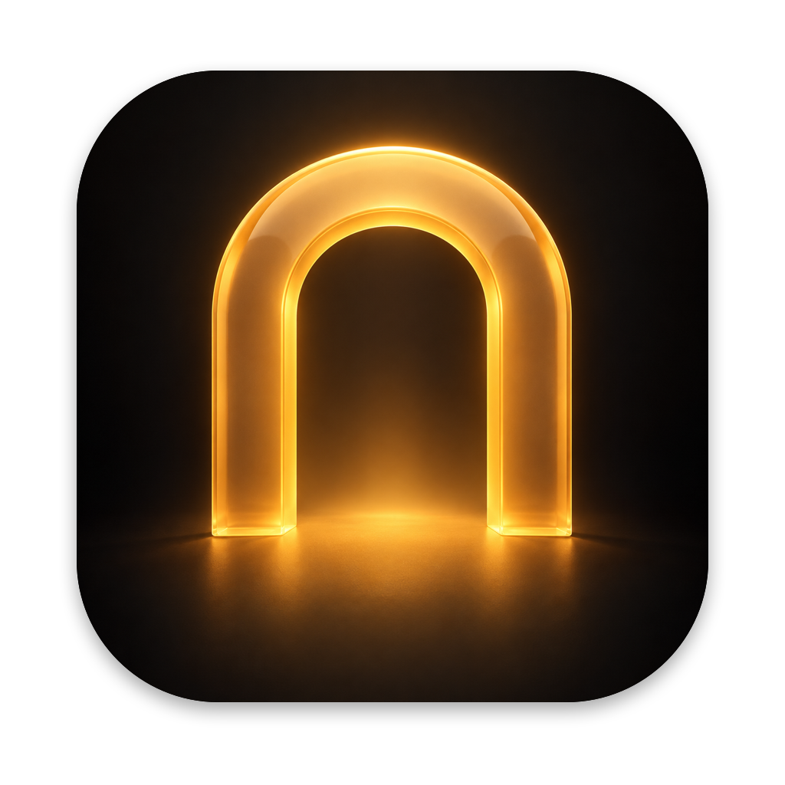

Archway GitHubArchway is a free Mac app that opens your Steam library on Apple silicon. No Windows, no setup guides, no settings to guess.
Download Archway for Mac Free and open source. Tested on macOS 27.A short introduction plays while it fetches its runtime and sets up a Windows environment for your games.
Steam’s own sign-in page appears. Archway never sees your password, and Steam goes quiet after that.
Pick one from your library. The download runs out of sight while the button fills up.
Archway starts the game with the settings it needs, translated to Metal by Apple’s D3DMetal.
Archway is early. Brick by Brick: Tidy Up the Small Town! is tested from install to play. Every other game is welcome to try and is marked untested, with no promise that it runs.
Big AAA titles and games with kernel anti-cheat aren’t on the map. Smaller indie games are where Archway feels at home.
If you leave, Remove Archway takes its data, Windows environment and games with it.
For Apple silicon Macs. The first start downloads about 145 MB and Windows Steam.
Download Archway for Mac